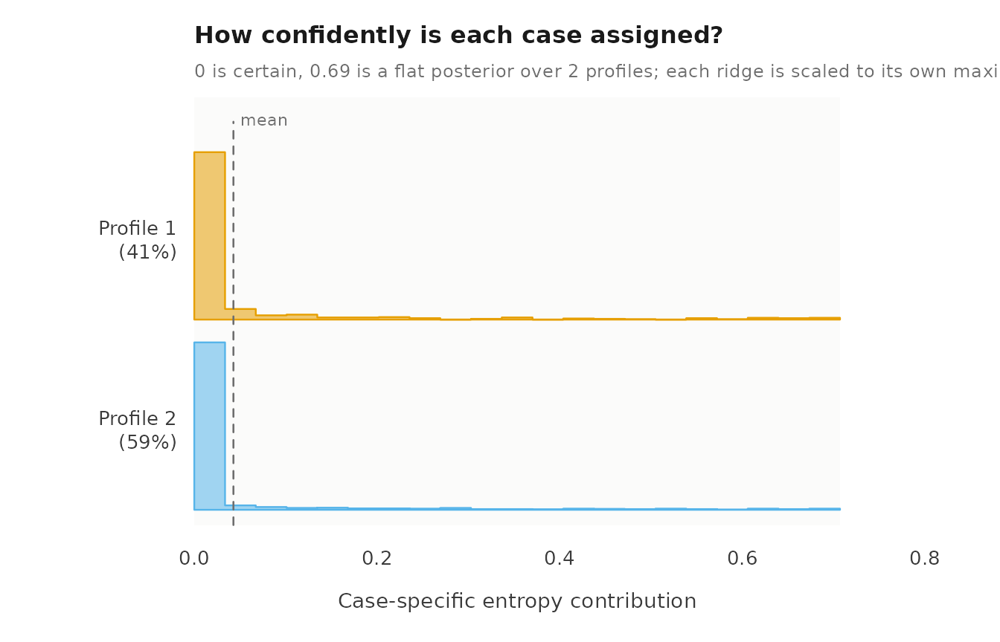
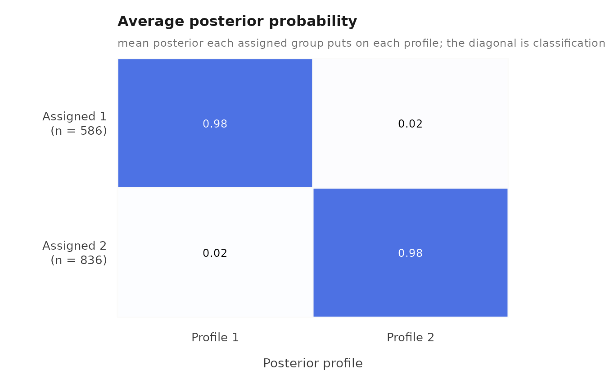
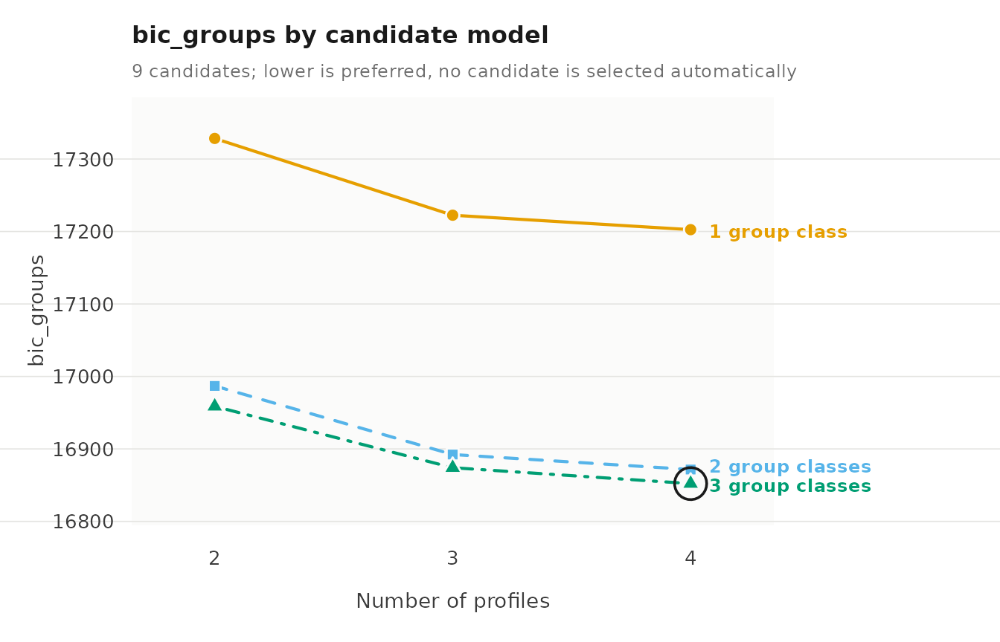

A fitted mixture model is evaluated on four questions: whether the estimation found a stable solution, how clearly observations and groups are classified, whether the indicators are independent within profiles as the model assumes, and whether a different number of profiles or group classes fits better.
Data
course_engagement has one row per course enrolment:
1,422 enrolments from 106 students. student identifies the
group, and five activity measures (browse,
lectures, forum_read, forum_post,
attendance) are the indicators, each standardized within
course.
The model to evaluate
To fit the model, we call multilpa() with
vars for the indicators, id for the group,
n_profiles for the number of profiles,
n_group_classes for the number of group classes,
n_starts for the number of random EM starts, and
seed for reproducible starts.
Estimation
To check convergence, we call get_results() with
"model". converged reports convergence of the
best start, boundary whether a variance reached its lower
bound, and n_best_replicated how many starts reached the
best log likelihood.
get_results(fit, "model")
#> n_observations n_informative n_groups n_profiles n_group_classes centering covariance_structure
#> 1 1422 1422 106 2 2 none VVI
#> n_parameters n_parameters_with_measurement log_likelihood aic bic_groups bic_individual
#> 1 23 23 -8440 16926 16987 17047
#> converged iterations boundary small_classes best_start n_best_replicated
#> 1 TRUE 8 FALSE FALSE 8 10To check the individual starts, we call get_results()
with "starts".
get_results(fit, "starts")
#> start log_likelihood converged iterations error boundary
#> 1 1 -8440 TRUE 10 <NA> FALSE
#> 2 2 -8440 TRUE 10 <NA> FALSE
#> 3 3 -8440 TRUE 10 <NA> FALSE
#> 4 4 -8440 TRUE 13 <NA> FALSE
#> 5 5 -8440 TRUE 10 <NA> FALSE
#> 6 6 -8440 TRUE 12 <NA> FALSE
#> 7 7 -8440 TRUE 10 <NA> FALSE
#> 8 8 -8440 TRUE 8 <NA> FALSE
#> 9 9 -8440 TRUE 10 <NA> FALSE
#> 10 10 -8440 TRUE 9 <NA> FALSETo check whether other random seeds reach the same solution, we call
sensitivity() with seeds for the seeds to try.
optimum numbers the distinct maxima found, and
agreement is the share of observations assigned as in the
original fit, after matching the arbitrary profile labels.
sensitivity(fit, seeds = 1:5)
#> seed log_likelihood converged iterations optimum best agreement
#> 1 1 -8440 TRUE 8 1 TRUE 1
#> 2 2 -8440 TRUE 14 1 TRUE 1
#> 3 3 -8440 TRUE 13 1 TRUE 1
#> 4 4 -8440 TRUE 9 1 TRUE 1
#> 5 5 -8440 TRUE 12 1 TRUE 1Classification
To obtain relative entropy, we call get_results() with
"entropy". It is reported for observations and for groups:
1 means every case is assigned with certainty, 0 means no
separation.
get_results(fit, "entropy")
#> level n_classes n_units entropy_sum relative_entropy
#> 1 individuals 2 1422 60.94 0.938
#> 2 groups 2 106 4.44 0.940To obtain classification quality by class, we call
get_results() with "classification".
n_modal is the number of cases assigned to the class,
average_posterior the mean posterior probability of those
cases, and odds_correct_classification compares that
certainty with the class’s size.
get_results(fit, "classification")
#> level class n_modal proportion_modal estimated_n estimated_proportion average_posterior
#> 1 individuals 1 586 0.412 587.9 0.413 0.982
#> 2 individuals 2 836 0.588 834.1 0.587 0.985
#> 3 groups 1 35 0.330 34.5 0.325 0.969
#> 4 groups 2 71 0.670 71.5 0.675 0.992
#> odds_correct_classification
#> 1 76.4
#> 2 46.1
#> 3 64.9
#> 4 59.8To see the uncertainty, we call plot() with
what = "entropy" for the per-case uncertainty within each
profile, and with what = "avepp" for the average posterior
of each assigned class across all classes.
plot(fit, what = "entropy")
plot(fit, what = "avepp")
Local independence
The default model assumes the indicators are independent within a
profile. To test this, we call get_results() with
"residuals". residual is the correlation
between two indicators that the profiles leave unexplained;
by = "overall" pools the profiles. The p-values are
approximate.
get_results(fit, "residuals", by = "overall")
#> profile indicator_1 indicator_2 kind observed expected residual effective_n statistic df
#> 1 overall forum_read attendance gaussian 0.21588 0 0.21588 1422 8.2620 NA
#> 2 overall lectures attendance gaussian 0.19234 0 0.19234 1422 7.3367 NA
#> 3 overall browse attendance gaussian 0.18077 0 0.18077 1422 6.8851 NA
#> 4 overall forum_post attendance gaussian 0.17239 0 0.17239 1422 6.5592 NA
#> 5 overall browse forum_read gaussian 0.06266 0 0.06266 1422 2.3634 NA
#> 6 overall browse forum_post gaussian -0.02511 0 -0.02511 1422 -0.9462 NA
#> 7 overall browse lectures gaussian -0.02126 0 -0.02126 1422 -0.8010 NA
#> 8 overall forum_read forum_post gaussian 0.01986 0 0.01986 1422 0.7482 NA
#> 9 overall lectures forum_post gaussian 0.01709 0 0.01709 1422 0.6438 NA
#> 10 overall lectures forum_read gaussian 0.00192 0 0.00192 1422 0.0724 NA
#> p_value p_adjusted
#> 1 1.43e-16 1.43e-16
#> 2 2.19e-13 2.19e-13
#> 3 5.78e-12 5.78e-12
#> 4 5.41e-11 5.41e-11
#> 5 1.81e-02 1.81e-02
#> 6 3.44e-01 3.44e-01
#> 7 4.23e-01 4.23e-01
#> 8 4.54e-01 4.54e-01
#> 9 5.20e-01 5.20e-01
#> 10 9.42e-01 9.42e-01To relax the assumption, we call multilpa() with
covariance_model = "full", which estimates the covariances
between indicators within each profile. To compare the two models, we
call get_results() with "information_criteria"
on each; lower values are better.
full <- multilpa(course_engagement,
vars = c("browse", "lectures", "forum_read", "forum_post",
"attendance"),
id = "student", n_profiles = 2, n_group_classes = 2,
covariance_model = "full", n_starts = 10, seed = 1)
get_results(fit, "information_criteria")
#> log_likelihood n_parameters aic kic bic_groups bic_individual sabic_groups sabic_individual
#> 1 -8440 23 16926 16952 16987 17047 16914 16974
#> caic_groups caic_individual awe_groups awe_individual icl_groups icl_individual clc_groups
#> 1 17010 17070 17172 17404 16996 17168 16889
#> clc_individual
#> 1 17002
get_results(full, "information_criteria")
#> log_likelihood n_parameters aic kic bic_groups bic_individual sabic_groups sabic_individual
#> 1 -8313 43 16712 16758 16827 16938 16691 16802
#> caic_groups caic_individual awe_groups awe_individual icl_groups icl_individual clc_groups
#> 1 16870 16981 17165 17564 16835 17123 16635
#> clc_individual
#> 1 16811
get_results(full, "residuals", by = "overall")
#> profile indicator_1 indicator_2 kind observed expected residual effective_n statistic df
#> 1 overall forum_read forum_post gaussian 0.02438 0.02439 -1.32e-05 1422 -4.97e-04 NA
#> 2 overall lectures forum_post gaussian 0.02010 0.02011 -1.20e-05 1422 -4.50e-04 NA
#> 3 overall forum_post attendance gaussian 0.18793 0.18794 -1.09e-05 1422 -4.25e-04 NA
#> 4 overall lectures forum_read gaussian 0.00887 0.00888 -8.96e-06 1422 -3.38e-04 NA
#> 5 overall lectures attendance gaussian 0.20504 0.20505 -7.49e-06 1422 -2.94e-04 NA
#> 6 overall browse forum_post gaussian -0.01866 -0.01865 -6.84e-06 1422 -2.58e-04 NA
#> 7 overall forum_read attendance gaussian 0.24180 0.24180 -4.19e-06 1422 -1.68e-04 NA
#> 8 overall browse lectures gaussian -0.01380 -0.01379 -4.10e-06 1422 -1.55e-04 NA
#> 9 overall browse forum_read gaussian 0.07442 0.07441 1.16e-06 1422 4.40e-05 NA
#> 10 overall browse attendance gaussian 0.20382 0.20382 6.60e-07 1422 2.59e-05 NA
#> p_value p_adjusted
#> 1 1 1
#> 2 1 1
#> 3 1 1
#> 4 1 1
#> 5 1 1
#> 6 1 1
#> 7 1 1
#> 8 1 1
#> 9 1 1
#> 10 1 1Number of profiles and group classes
To compare numbers of profiles and group classes, we call
enumerate_classes() with n_profiles and
n_group_classes for the counts to cross. It fits every
combination and does not choose a model.
candidates <- enumerate_classes(course_engagement,
vars = c("browse", "lectures", "forum_read",
"forum_post", "attendance"),
id = "student", n_profiles = 2:4,
n_group_classes = 1:3, n_starts = 5, seed = 1)
as.data.frame(candidates)
#> n_profiles n_group_classes model log_likelihood n_parameters aic kic bic_groups
#> 1 2 1 VVI -8615 21 17272 17296 17328
#> 2 3 1 VVI -8537 32 17137 17172 17222
#> 3 4 1 VVI -8501 43 17088 17134 17203
#> 4 2 2 VVI -8440 23 16926 16952 16987
#> 5 3 2 VVI -8365 35 16799 16837 16892
#> 6 4 2 VVI -8326 47 16746 16796 16872
#> 7 2 3 VVI -8421 25 16892 16920 16959
#> 8 3 3 VVI -8348 38 16773 16814 16874
#> 9 4 3 VVI -8307 51 16716 16770 16852
#> bic_individual sabic_groups sabic_individual caic_groups caic_individual awe_groups
#> 1 17383 17262 17316 17349 17404 17489
#> 2 17306 17121 17204 17254 17338 17468
#> 3 17314 17067 17178 17246 17357 17532
#> 4 17047 16914 16974 17010 17070 17172
#> 5 16983 16782 16872 16927 17018 17169
#> 6 16994 16723 16844 16919 17041 17241
#> 7 17024 16880 16944 16984 17049 17193
#> 8 16973 16754 16852 16912 17011 17212
#> 9 16985 16691 16823 16903 17036 17284
#> awe_individual icl_groups icl_individual clc_groups clc_individual profile_entropy group_entropy
#> 1 17753 17328 17537 17230 17385 0.922 NA
#> 2 18346 17222 18018 17073 17785 0.772 NA
#> 3 18802 17203 18361 17002 18048 0.735 NA
#> 4 17404 16996 17168 16888 17002 0.938 0.940
#> 5 18000 16901 17641 16737 17387 0.789 0.943
#> 6 18505 16881 18023 16662 17682 0.739 0.937
#> 7 17398 17002 17142 16885 16960 0.940 0.816
#> 8 18013 16921 17623 16744 17347 0.792 0.797
#> 9 18540 16893 18017 16656 17646 0.738 0.823
#> converged boundary n_best_replicated warnings error
#> 1 TRUE FALSE 5 <NA>
#> 2 TRUE FALSE 5 <NA>
#> 3 TRUE FALSE 5 <NA>
#> 4 TRUE FALSE 5 <NA>
#> 5 TRUE FALSE 5 <NA>
#> 6 TRUE FALSE 5 <NA>
#> 7 TRUE FALSE 5 <NA>
#> 8 TRUE FALSE 5 <NA>
#> 9 TRUE FALSE 5 <NA>To find which candidate minimizes each criterion, we call
get_results() with "criteria". Criteria that
depend on a sample size are reported with the number of groups and with
the number of observations.
get_results(candidates, "criteria")
#> criterion convention n_profiles n_group_classes model value
#> 1 aic <NA> 4 3 VVI 16716
#> 2 kic <NA> 4 3 VVI 16770
#> 3 bic groups 4 3 VVI 16852
#> 4 bic individuals 3 3 VVI 16973
#> 5 sabic groups 4 3 VVI 16691
#> 6 sabic individuals 4 3 VVI 16823
#> 7 caic groups 4 3 VVI 16903
#> 8 caic individuals 3 3 VVI 17011
#> 9 awe groups 3 2 VVI 17169
#> 10 awe individuals 2 3 VVI 17398
#> 11 icl groups 4 2 VVI 16881
#> 12 icl individuals 2 3 VVI 17142
#> 13 clc groups 4 3 VVI 16656
#> 14 clc individuals 2 3 VVI 16960To draw one criterion across the grid, we call plot()
with criterion for its name.
plot(candidates, criterion = "bic_groups")
To take one candidate out of the grid as a fitted model, we call
candidate_fit() with its n_profiles and
n_group_classes.
candidate_fit(candidates, n_profiles = 3, n_group_classes = 2)
#> Two-level latent profile analysis: 3 profiles, 2 group classes
#> 1422 individuals in 106 groups; varying diagonal residual covariance (VVI)
#> Log likelihood: -8364.520986 | AIC: 16799.042 | BIC (groups): 16892.262
#> Converged: TRUE | iterations: 115 | best start: 4/5
#>
#> profile browse lectures forum_read forum_post attendance count proportion
#> 1 0.703 0.708 0.805 0.744 1.114 384 0.270
#> 2 0.375 0.165 0.433 0.320 0.238 468 0.329
#> 3 -0.782 -0.613 -0.898 -0.765 -0.946 570 0.401
#>
#> Variances and standard errors: get_results(x, "profiles").
#> Every other table: get_results(x, what = ), or get_results(x, "all").Parameter uncertainty
To obtain standard errors and 95% Wald intervals, we call
parameter_inference() on the fit. With
vcov_type = "robust", the standard errors are clustered on
groups.
parameter_inference(fit)
#> level outcome term parameter estimate standard_error statistic p_value
#> 1 measurement profile_1 browse mean -0.766 0.0312 -24.5 7.50e-133
#> 2 measurement profile_1 lectures mean -0.606 0.0309 -19.6 1.33e-85
#> 3 measurement profile_1 forum_read mean -0.879 0.0262 -33.5 1.48e-246
#> 4 measurement profile_1 forum_post mean -0.753 0.0277 -27.2 8.47e-163
#> 5 measurement profile_1 attendance mean -0.921 0.0264 -34.8 6.92e-266
#> 6 measurement profile_2 browse mean 0.540 0.0271 19.9 3.33e-88
#> 7 measurement profile_2 lectures mean 0.427 0.0325 13.2 1.55e-39
#> 8 measurement profile_2 forum_read mean 0.620 0.0247 25.1 1.22e-138
#> 9 measurement profile_2 forum_post mean 0.531 0.0295 18.0 3.64e-72
#> 10 measurement profile_2 attendance mean 0.649 0.0223 29.2 7.57e-187
#> 11 measurement profile_1 browse variance 0.528 0.0322 NA NA
#> 12 measurement profile_1 lectures variance 0.538 0.0321 NA NA
#> 13 measurement profile_1 forum_read variance 0.363 0.0228 NA NA
#> 14 measurement profile_1 forum_post variance 0.421 0.0261 NA NA
#> 15 measurement profile_1 attendance variance 0.374 0.0228 NA NA
#> 16 measurement profile_2 browse variance 0.590 0.0295 NA NA
#> 17 measurement profile_2 lectures variance 0.845 0.0421 NA NA
#> 18 measurement profile_2 forum_read variance 0.481 0.0244 NA NA
#> 19 measurement profile_2 forum_post variance 0.689 0.0348 NA NA
#> 20 measurement profile_2 attendance variance 0.384 0.0196 NA NA
#> 21 profile profile_1 group_class_1 probability 0.829 0.0221 NA NA
#> 22 profile profile_2 group_class_1 probability 0.171 0.0221 NA NA
#> 23 profile profile_1 group_class_2 probability 0.214 0.0155 NA NA
#> 24 profile profile_2 group_class_2 probability 0.786 0.0155 NA NA
#> 25 group group_class_1 <NA> probability 0.325 0.0476 NA NA
#> 26 group group_class_2 <NA> probability 0.675 0.0476 NA NA
#> p_adjusted conf_low conf_high
#> 1 7.50e-133 -0.827 -0.704
#> 2 1.33e-85 -0.667 -0.546
#> 3 1.48e-246 -0.931 -0.828
#> 4 8.47e-163 -0.807 -0.698
#> 5 6.92e-266 -0.972 -0.869
#> 6 3.33e-88 0.486 0.593
#> 7 1.55e-39 0.364 0.491
#> 8 1.22e-138 0.571 0.668
#> 9 3.64e-72 0.473 0.588
#> 10 7.57e-187 0.605 0.693
#> 11 NA 0.465 0.592
#> 12 NA 0.475 0.601
#> 13 NA 0.318 0.408
#> 14 NA 0.370 0.472
#> 15 NA 0.329 0.418
#> 16 NA 0.532 0.648
#> 17 NA 0.762 0.927
#> 18 NA 0.434 0.529
#> 19 NA 0.621 0.757
#> 20 NA 0.346 0.422
#> 21 NA 0.786 0.873
#> 22 NA 0.127 0.214
#> 23 NA 0.184 0.244
#> 24 NA 0.756 0.816
#> 25 NA 0.232 0.419
#> 26 NA 0.581 0.768
parameter_inference(fit, vcov_type = "robust")
#> level outcome term parameter estimate standard_error statistic p_value
#> 1 measurement profile_1 browse mean -0.766 0.0306 -25.0 4.52e-138
#> 2 measurement profile_1 lectures mean -0.606 0.0355 -17.1 1.54e-65
#> 3 measurement profile_1 forum_read mean -0.879 0.0267 -32.9 4.23e-237
#> 4 measurement profile_1 forum_post mean -0.753 0.0274 -27.4 9.68e-166
#> 5 measurement profile_1 attendance mean -0.921 0.0274 -33.6 1.64e-247
#> 6 measurement profile_2 browse mean 0.540 0.0306 17.6 1.23e-69
#> 7 measurement profile_2 lectures mean 0.427 0.0311 13.8 4.73e-43
#> 8 measurement profile_2 forum_read mean 0.620 0.0248 25.0 2.52e-138
#> 9 measurement profile_2 forum_post mean 0.531 0.0292 18.2 1.14e-73
#> 10 measurement profile_2 attendance mean 0.649 0.0235 27.6 1.51e-167
#> 11 measurement profile_1 browse variance 0.528 0.0288 NA NA
#> 12 measurement profile_1 lectures variance 0.538 0.0305 NA NA
#> 13 measurement profile_1 forum_read variance 0.363 0.0203 NA NA
#> 14 measurement profile_1 forum_post variance 0.421 0.0277 NA NA
#> 15 measurement profile_1 attendance variance 0.374 0.0226 NA NA
#> 16 measurement profile_2 browse variance 0.590 0.0278 NA NA
#> 17 measurement profile_2 lectures variance 0.845 0.0451 NA NA
#> 18 measurement profile_2 forum_read variance 0.481 0.0216 NA NA
#> 19 measurement profile_2 forum_post variance 0.689 0.0338 NA NA
#> 20 measurement profile_2 attendance variance 0.384 0.0180 NA NA
#> 21 profile profile_1 group_class_1 probability 0.829 0.0328 NA NA
#> 22 profile profile_2 group_class_1 probability 0.171 0.0328 NA NA
#> 23 profile profile_1 group_class_2 probability 0.214 0.0230 NA NA
#> 24 profile profile_2 group_class_2 probability 0.786 0.0230 NA NA
#> 25 group group_class_1 <NA> probability 0.325 0.0487 NA NA
#> 26 group group_class_2 <NA> probability 0.675 0.0487 NA NA
#> p_adjusted conf_low conf_high
#> 1 4.52e-138 -0.826 -0.706
#> 2 1.54e-65 -0.676 -0.537
#> 3 4.23e-237 -0.932 -0.827
#> 4 9.68e-166 -0.806 -0.699
#> 5 1.64e-247 -0.974 -0.867
#> 6 1.23e-69 0.480 0.600
#> 7 4.73e-43 0.367 0.488
#> 8 2.52e-138 0.571 0.668
#> 9 1.14e-73 0.473 0.588
#> 10 1.51e-167 0.603 0.695
#> 11 NA 0.472 0.585
#> 12 NA 0.479 0.598
#> 13 NA 0.323 0.403
#> 14 NA 0.367 0.476
#> 15 NA 0.329 0.418
#> 16 NA 0.535 0.644
#> 17 NA 0.756 0.933
#> 18 NA 0.439 0.524
#> 19 NA 0.623 0.755
#> 20 NA 0.349 0.419
#> 21 NA 0.765 0.894
#> 22 NA 0.106 0.235
#> 23 NA 0.169 0.259
#> 24 NA 0.741 0.831
#> 25 NA 0.230 0.421
#> 26 NA 0.579 0.770Reference
The calls below list other evaluation functions and views. Each comment states what the call returns.
get_results(fit, "information_criteria", format = "long") # one row per criterion
get_results(fit, "average_posteriors") # mean posterior by assigned class
get_results(fit, "classification_errors") # P(assigned class | true class)
get_results(fit, "residuals") # residuals within each profile
get_results(candidates, "candidates") # the full enumeration grid
summary(candidates) # the best candidate on each criterion
bootstrap_lrt(fit, candidate_fit(candidates, n_profiles = 3, n_group_classes = 2),
iter = 199, seed = 42) # bootstrap test of one more class (slow)
enumerate_classes(course_engagement, vars = c("browse", "lectures"),
id = "student", n_profiles = 2:3,
model = c("VVI", "VVV")) # crossing covariance models (slow)
confint(fit) # confidence intervals
vcov(fit, vcov_type = "robust") # robust covariance matrix
plot(fit, what = "posteriors") # posterior of each assigned profile
plot(fit, what = "bars") # profile means with 95% intervals
diagnostics(fit) # all classification diagnosticsLimits
- Information criteria compare the candidates fitted, not all possible models.
- Classification measures describe the fitted model; a misspecified model can still classify sharply.
- Wald intervals assume a converged fit with no variance at its bound, and are conditional on the chosen numbers of profiles and classes.
- Unmodelled dependence between indicators can make extra classes look better.